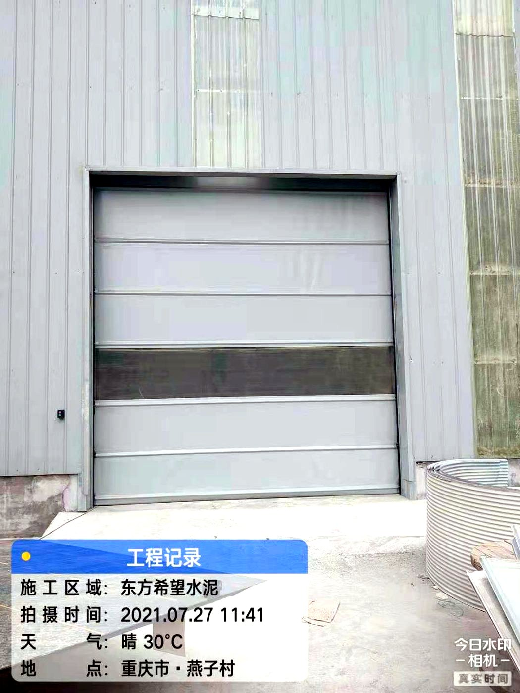
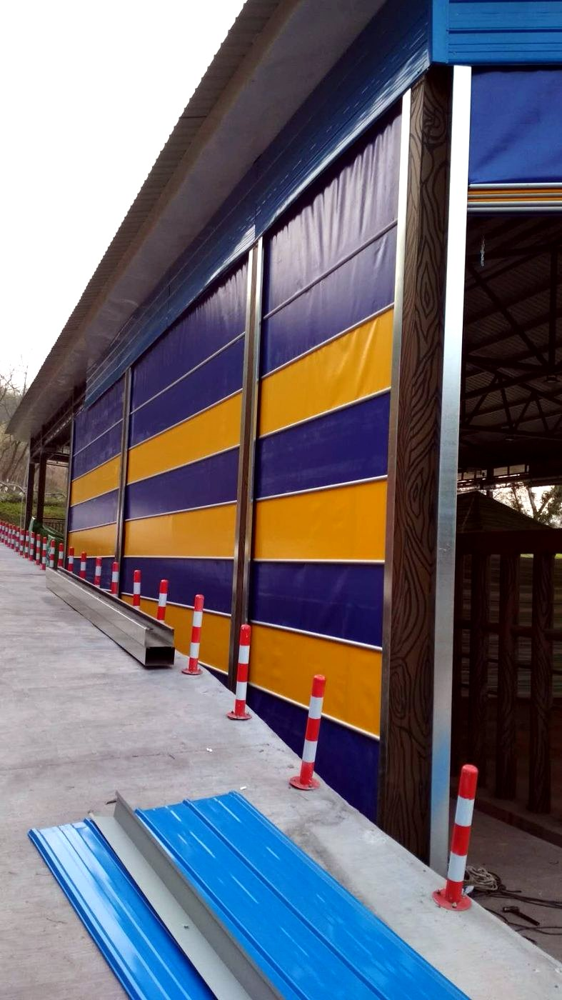

为什么大洞口要用堆积门
卷绕式门在大洞口上有三个绕不过去的物理限制：
- 卷轴太长会颤——门宽超过六米，卷轴跨度变大，转速一高就抖，抖动会传导到轴承和导轨。
- 卷径顶门楣——门越高，卷起来的那一坨越大，门楣空间不够就只能压低门高。
- 软帘受风像帆——大面积软帘在风压下整体鼓出，导轨约束不住中间部分。
折叠堆积把门帘一段段叠进门楣上方的堆积区，卷轴不再是受力主角；配合横向抗风杆，风压被分散到整幅门帘再传到导轨，这就是它能做大洞口的原因。
抗风是怎么做到的
关键在于横向抗风杆：每隔一段距离在门帘上穿一根加强杆，杆的两端卡在导轨里。风压作用在门帘上时，力先传到杆，再由杆传到两侧导轨和立柱，而不是全部由帘布自己扛。
抗风杆有内置和外置两种做法：内置外观整齐、密封好；外置便于更换、抗风更强。风压特别大的位置（山口、沿海、厂房穿堂风），杆的间距要加密、杆径要加大，这些都要按当地基本风压核算，不是套一个“能抗几级风”的口号。
结构组成
- 门帘：PVC 涂层织物，多段式，折叠处有加强带。
- 抗风杆：横向贯穿，两端入导轨，是承风主体。
- 导轨：比普通快速门更重，承担风压传递与门帘导向。
- 提升机构：卷扬或链条提升，配重与刹车。
- 安全装置：光电、安全底边、防坠、限位与急停。
适合与不适合
| 场景 | 适合度 | 说明 |
|---|---|---|
| 物流园区通道、月台 | 适合 | 洞口宽、车辆频繁，折叠提升不占侧向空间 |
| 垃圾中转站、处理厂卸料口 | 适合 | 洞口大、需要异味与粉尘隔断，配合负压使用 |
| 大型厂房、钢构车间大门 | 适合 | 十米级洞口，卷帘与提升门都吃力 |
| 动物园、养殖场隔离通道 | 适合 | 开启快、洞口大，便于车辆与动物转运 |
| 要求严格气密的洁净区 | 谨慎 | 折叠结构的密封弱于硬质门板，压差要求高时另选门型 |
| 每天上千次的超高频通道 | 不建议 | 折叠带是易损点，超高频应选硬质快速门 |
参数参考
| 项目 | 常规配置区间 | 说明 |
|---|---|---|
| 适用洞口宽 | 6–15 m | 超过 15 m 需按结构单独核算 |
| 适用洞口高 | 5–10 m | 门楣需留堆积区高度 |
| 开启速度 | 0.5–1.0 m/s | 比软帘快速门慢，换取大洞口稳定性 |
| 门帘 | PVC 涂层织物，分段折叠 | 可按需加视窗 |
| 抗风 | 横向抗风杆，内置/外置 | 杆距与杆径按当地风压核算 |
| 控制 | 雷达、地磁、遥控、联动 | 车辆通行多用雷达+地磁组合 |
安装条件
- 门楣堆积区：折叠后的门帘要堆在门楣上方，高度按门高与折叠段数计算，这一项决定能不能装。
- 立柱承载：大洞口的风压最终落在立柱上，轻钢厂房要核算立柱与檩条的承载。
- 导轨基础：地面导轨槽要顺直，车辆碾压位置建议做保护。
- 电源与检修：提升机构在门楣上方，检修平台或爬梯要提前规划。
维护重点
折叠门帘的折痕处是最先出问题的地方：反复折叠会出现裂纹，裂纹扩大就是撕裂。建议每季度展开检查折痕与加强带，每半年检查抗风杆是否变形、卡扣是否脱落。风大的地区，每次大风过后巡一次，比按周期保养更有效。
项目实拍


常见问题
堆积门和快速门有什么区别？
核心区别在收门方式：快速门把软帘卷在卷轴上，堆积门把门帘折叠堆在门楣上方。前者适合六米以内的通道，后者适合六米以上的大洞口和高风压位置。速度上快速门更快，堆积门胜在洞口适应性和抗风。
堆积门真的能抗十级风吗？
不能笼统地说能或不能。抗风能力取决于洞口尺寸、抗风杆间距与杆径、导轨与立柱的承载，同一款门装在不同位置结果不同。正确做法是按项目所在地的基本风压核算，并把核算结果写进技术附件，而不是只看一句宣传语。
大洞口为什么不能用卷帘门？
卷轴跨度大就会颤，卷径大门楣装不下，软帘面积大风压下整体鼓出。这三个问题在大洞口会同时出现，所以工业上大洞口普遍改用堆积门、分节提升门或推拉门。
日常维护麻烦吗？
不复杂，但要按位置检查。重点是折叠处的折痕、抗风杆的卡扣、导轨里的异物。风大的地区建议大风后巡一次；有条件的每季度做一次完整展开检查。
参考标准
- JG/T 302-2022《卷帘门窗》
- GB/T 7106-2019《建筑外门窗气密、水密、抗风压性能检测方法》
- GB/T 31433《建筑幕墙、门窗通用技术条件》
本页更新于 2026-10-17。以上标准为产品选型与验收的通用依据，具体执行版本以项目所在地区现行有效版本为准。